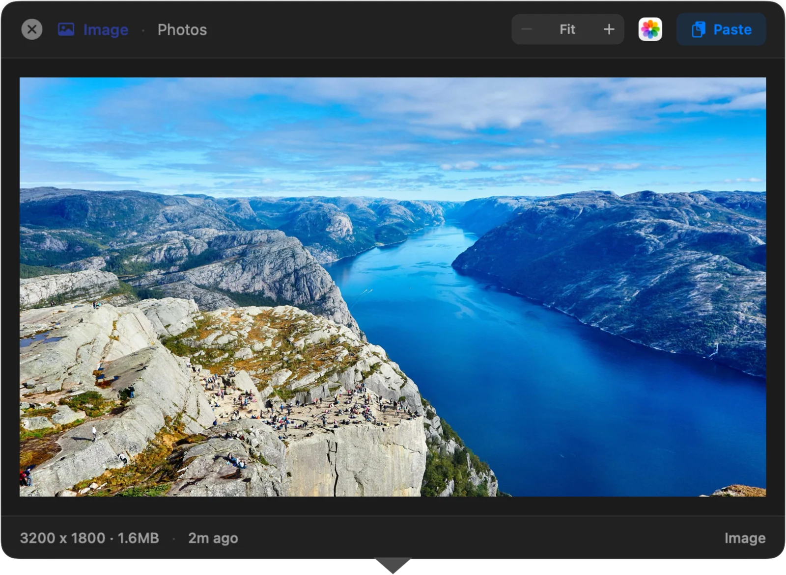
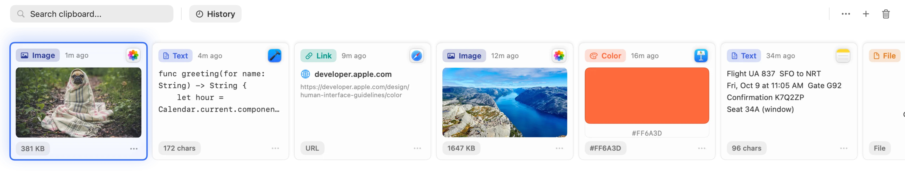
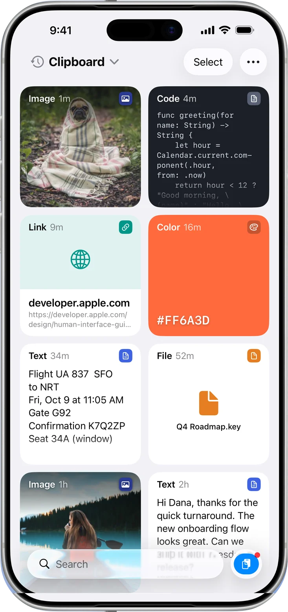
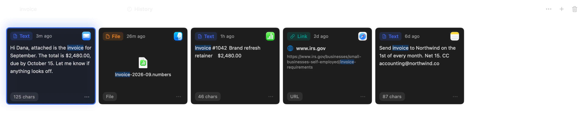
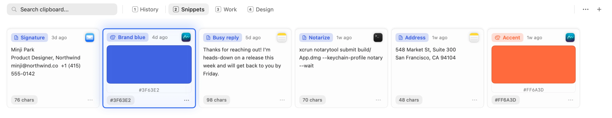
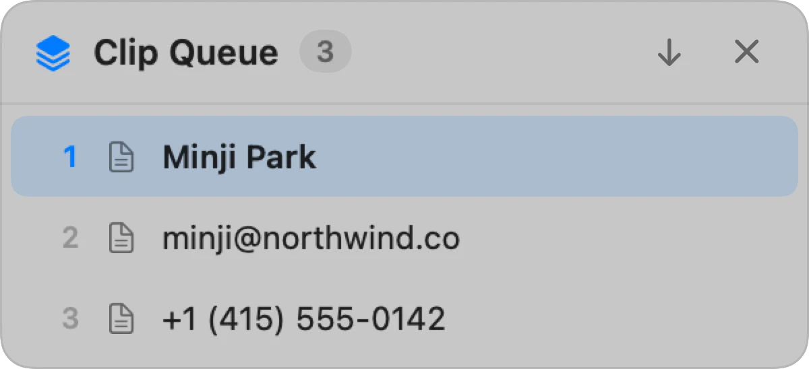
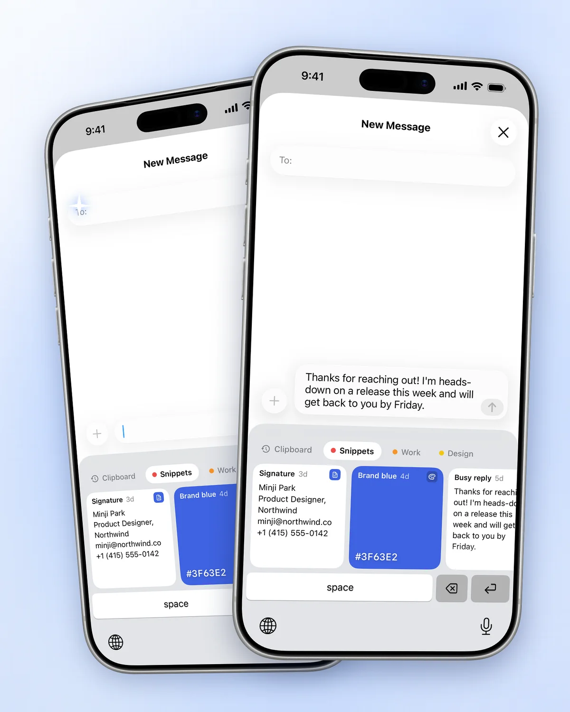

Every copy is kept
Text, images, links, files, and colors go into the history. Click a card once and it is back on your clipboard.
A clipboard manager for Mac.
Press ⇧⌘V and your history slides up from the bottom of the screen.
Free and open source on Mac · macOS 14 or later · iPhone sync in the App Store edition



Text, images, links, files, and colors go into the history. Click a card once and it is back on your clipboard.
Open the panel and type. Search by content or title, then narrow it down by type or date.

Group replies, snippets, and brand colors into tabs. Jump between them with ⌘1 to ⌘9.

Check a clip before you paste it. Text clips can be edited in place with ⌘E.
Copy the name, the email, and the phone number first. Each ⌘V then pastes the next one, so you stop switching back and forth.
Clip Queue needs no extra permission. How to use it


App Store edition only · iOS 26 or later
There is no developer server holding your clips. Optional sync uses your private iCloud database.
Nothing to sign up for and nothing to log in to.
No telemetry and no usage tracking.
Apps such as password managers can be excluded from the history, and the code is open to read. Privacy policy · Source code
Both editions are built from the same repository. Run only one of them on a Mac.
Free
DMG or Homebrew. The open-source build.
Download the DMGbrew install --cask mobrava/tap/clipbaraFree for 7 days
Then one purchase for Mac and iPhone. No subscription.
Get it on the App StoreThe DMG is signed with Developer ID Application: MinSang Kim (5DH57J8HLC) and notarized by Apple. Official download channels
The direct-download and Homebrew editions for Mac are free and open source. The App Store edition has a 7-day trial, followed by a one-time purchase that unlocks both Mac and iPhone. There is no subscription.
Choose the App Store edition if you want iCloud sync and the iPhone companion. Choose the free DMG or Homebrew edition for a local Mac clipboard, including optional direct paste. The editions keep separate histories. You can export and import your history in Settings → General → Backup.
By default, selecting a clip puts it back on the clipboard and closes the panel. Press ⌘V in the app you were using. The DMG edition can do that last step for you when Paste into the Active App is enabled in Settings → Pasting and Accessibility permission is granted. The App Store edition does not include direct paste.
Sync between Mac and iPhone is supported. Turn on iCloud sync in the App Store edition to share saved text, links, and images. Saving new copies on iPhone works differently: use the Paste button, the share sheet, or Save Clipboard When Opening. Clipbara does not continuously collect copies from other apps while it is closed. Images sync according to your sync settings and size limits; file items such as PDF documents do not sync.
Your Mac stores it locally. Optional iCloud sync in the App Store edition uses your private iCloud database. Clipbara does not run a server for your clips or collect analytics. You can exclude apps, set retention limits, and delete history in Settings.
Open an issue in the official mobrava/Clipbara GitHub repository. Include your macOS or iOS version, the Clipbara version, and whether you use the App Store or DMG edition. Never include passwords or private clipboard contents.